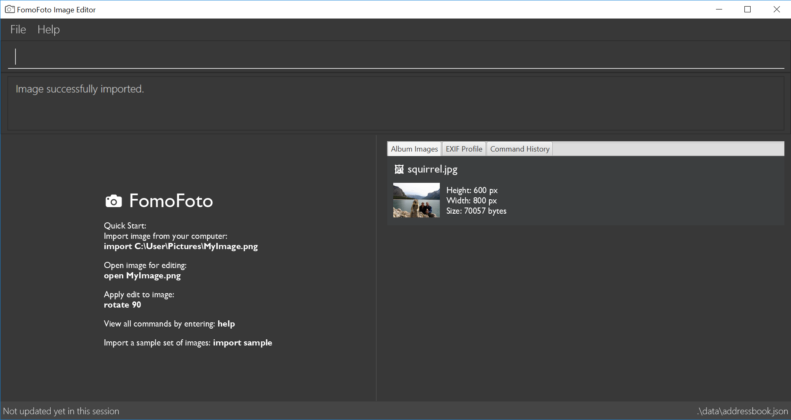

1. Overview of the Project
My team and I were tasked with enhancing a basic command line AddressBook for our Software Engineering project. We decided to morph the project into an image editor.
FomoFoto is a robust yet simple image-editing tool. Users interact with the application through worded commands from their keyboard, and receive visual feedback from it through the displayed image on the application. Unlike other heavy image editors, FomoFoto has a very gentle learning curve as it abstracts out clutter by providing the more essential features (complex editing can still be done with special commands). The features and implementations are well documented in guides for users and developers respectively.
In addition, FomoFoto is well maintained with high reliability and code quality as it is covered by rigorous tests and checks.
2. Summary of Contributions
This section provides a summary of my coding, documentation and miscellaneous contributions to FomoFoto, our team project.
-
Major Enhancement: I added image manipulation commands.
-
What it does: This feature allows the user to manipulate images on a physical level, such as rotating, cropping and resizing the target image. Users key in keywords like
rotate,cropandresizeto activate the respective commands. -
Justification: This feature improves the product significantly because it is an essential feature of an image editor. Users might want to
rotatetheir images because the position is wrong orcropout certain unwanted parts in the image. Should the image be too large, the user canresizeit as well. -
Highlights: This enhancement works with all other commands, including the image filters that were implemented by my teammate. An in-depth analysis of the commands were done before we decided to make use of a library. The implementation was challenging because there was a need to coordinate between the image filter commands and the commands here, because the two libraries returned different objects. There was a need to ensure that the
Imageclass andCurrentEditclass could accept changes from both libraries. -
Credits:
ImgScalr Library
-
-
Major Enhancement: I added a watermark command.
-
What it does: This feature allows the user to add a watermark (any text or numbers) with the (c) sign to the target image. Users key in the keyword
wmto activate this command. -
Justification: This feature improves the product significantly because it helps users such as professional photographers protect their images after editing it on our image editor. The copyright watermark prevents unauthorised third parties from using the images for their own private purposes.
-
Highlights: It was especially challenging to integrate this command with all other commands acting on the same image, because a watermark should only be allowed to be added once to an image. This implied that we had to ensure that the
Imageclass contains a flag that indicates the presence of a watermark on the image, and this flag had to be constantly updated accurately in every command that can possibly add or remove a watermark from an image, which includes the watermark command, setpreset command and undo-redo commands.
-
-
Minor Enhancement: I added a feature where the
Imagereturns a file type (e.g. JPEG, PNG), because edits to images are affected by the file type. -
Code Contributed: List of commits, Project Code Dashboard
-
Other Contributions:
-
Project Management:
-
Ensured that we were on task with our project documentation by allocating roles and ensuring consistency with our words and diagrams. (User Guide and Developer Guide)
-
-
Enhancements to Existing Features:
-
Documentation:
-
Community:
-
Tools:
-
Integrated a third party library (ImgScalr) to the project (#26)
-
-
3. Contributions to the User Guide
Given below are sections I contributed to the User Guide. They showcase my ability to write documentation targeting end-users. |
A Walk Through
Let’s start on our image editing journey. In this walk through, we will be demonstrating some simple commands to edit a sample image.
-
Head over to this link to get a suggested sample image to start from.
-
Save the image in any desired folder you like on your device, like your Pictures folder for example. Name your image squirrel.jpg.
-
Start FomoFoto by referring to [Quick Start].
-
Open the folder that the image file is stored in. Then, to get the filepath of the image:
-
In Windows: Hold on to the Shift key and right click on your image file. Click the option Copy path.
-
In Mac: Go to terminal and navigate to your image file. Type 'pwd' to get the filepath to your image file and copy paste.
-
-
Go back to the FomoFoto application. Import the image into FomoFoto by typing as follows:
 Figure 1. Import Command
Figure 1. Import Command -
Paste the filepath of the image you would like to import.
-
In Windows: Remove the " and " signs at the two ends of the filepath.
-
-
Ensure your final command looks similar to the figure below (filepath may differ):
 Figure 2. Import with Filepath
Figure 2. Import with Filepath -
Press Enter to execute the import command. Your image should be now displayed on the Album tab on the FomoFoto application as shown in the figure below.
Figure 3. Import Success -
Open the imported image in FomoFoto by typing as follows:
 Figure 4. Open Command
Figure 4. Open Command -
Press Enter to execute the open command. Your image should be now displayed on the FomoFoto application as shown in the figure below.
 Figure 5. Open Success
Figure 5. Open Success -
Increase the brightness of the image by typing the following command:
brightness 2.0. This doubles the brightness of the image. Figure 6. Brightness Command
Figure 6. Brightness Command -
Press Enter. Your image should be brighter as shown in the figure below.
 Figure 7. Brightness Success
Figure 7. Brightness Success -
Crop your image by typing the following command:
crop 310 250 140 200. Press Enter. Your image should look similar as the figure below. Figure 8. Crop Success
Figure 8. Crop Success -
Save your edits by typing command:
save.
{kind=link}
Crop an Image : crop
Crops an image based on given top left hand corner coordinates, width and height of final cropped image wanted.
Format: crop X_POINTCOORD Y_POINTCOORD WIDTH HEIGHT
Example:
-
crop 2 3 500 500
Resize an Image : resize
Resizes the image to a given width and height provided by the user.
Format: resize WIDTH HEIGHT
Example:
-
resize 100 200
Rotate an Image : rotate
Rotates the image by a given degree provided by the user. Only 90, 180 or 270 degrees of rotation is allowed.
Format: rotate ANGLE
Example:
-
rotate 90
WaterMark : wm
Adds a watermark to the image with a © at the start of the input message. Should the message be too long to fit within the width of the image, the message will get cut off.
Format: wm MESSAGE
|
A watermark can only be added once to an image. |
Example:
-
wm FomoFoto -
wm Done By FomoFoto
Contributions to the Developer Guide
Given below are sections I contributed to the Developer Guide. They showcase my ability to write technical documentation and the technical depth of my contributions to the project. |
Design
Architecture
The Architecture Diagram given above explains the high-level design of the App. Given below is a quick overview of each component.
The .pptx files used to create diagrams in this document can be found in the diagrams directory. To update a diagram, modify the diagram in the pptx file, select the objects of the diagram, and choose Save as picture.
|
Main has only one class called MainApp. It is responsible for,
-
At app launch: Initializes the components in the correct sequence, and connects them up with each other.
-
At shut down: Shuts down the components and invokes cleanup method where necessary.
Commons represents a collection of classes used by multiple other components.
The following class plays an important role at the architecture level:
-
LogsCenter: Used by many classes to write log messages to the App’s log file.
The rest of the App consists of four components.
Each of the first three components do the following:
-
Defines its API in an
interfacewith the same name as the Component. -
Exposes its functionality using a
{Component Name}Managerclass.
The Model component consists of three components:
-
Albumwhich stores the pool of images that has been imported into the App. -
CurrentEditwhich holds the image that the App is currently editing in-memory. -
TransformationSetwhich stores the preset commands created by the user to edit the image.
How the Architecture Components Interact with Each Other
The Sequence Diagrams below show how the components interact with each other for the scenarios where the user issues the commands import C:\Users\XXX\Desktop\Pictures and rotate 90.

import C:\Users\XXX\Desktop\Pictures command
rotate 90 commandThe sections below give more details of each component.
Image Manipulation
Current Implementation
This segment involves manipulating the physical image itself, such as rotating, cropping and resizing. The implementations of these features are facilitated by ImgScalr Library, which is an external API Library that helps process the target image.
The manipulation feature is facilitated by CurrentEdit. It uses the following operations:
-
CurrentEdit#tempImageDoNotExist()- ReturnstrueiftempImageinCurrentEditis null.tempImageis null only ifopencommand is never called. -
CurrentEdit#getTempImage- Retrieves the temporary imagetempImagewhich stores the filepath of the temporary image, its history of edits [List<Command>] and its metadata. -
CurrentEdit#updateTempImage- Replaces the temporary image intempdirectory with the newly edited image and update thetempImageinstance in the class. -
CurrentEdit#addCommand- Adds this command to the edit history [List<Command>] intempImagefor theundo/redocommand. -
CurrentEdit#displayTempImage()- Displays the temporary image stored in thetempdirectory.
This manipulation feature mainly consists of:
-
RotateCommand: Allows user to rotate images by specifying a degree (90, 180 or 270 only). -
CropCommand: Allows user to crop images by specifying the coordinates of the top left corner, the width and the height of the desired cropped image. -
ResizeCommand: Allows user to resize images to the desired width and height.
The following describes main operations and processes for each command stated above.
Rotate Command
This command allows the user to rotate the targeted image by specifying a degree (90, 180 or 270 only). Upon receiving an input degree from the user, the degree will be checked for its validity and will throw an error if the degree is not within the specified range. The command will then be added to the List<Commands> belonging to tempImage found in currentEdit which saves the editing history of the targeted image.
Given below is an example usage scenario and how the command should behave at each step [This applies to the other image manipulation commands as well.]:
Step 1. When the user runs an open command to edit an image, it invokes a method which creates an instance of an Image that stores the filepath of the image, its history of edits List<Command> and its metadata. This Image object is saved under the variable name tempImage in currentEdit for editing.
Step 2. When the user enters the command (e.g. rotate 90), the entered command is parsed and the command will be executed.
| If an invalid command is provided, a reminder of how to use the command will be given to the user and no command will be executed. |
Step 3. During execution, the execute method in the RotateCommand class invokes currentEdit#getTempImage() to get the tempImage from the currentEdit.
Step 4. Upon retrieving the tempImage, the execute method in RotateCommand gets a BufferedImage instance from tempImage.The method then calls the external library ImgScalr's class rotate and passes the BufferedImage object in.
Step 5. A BufferedImage object is returned from the external library and currentEdit#updateTempImage() is invoked to save the newly edited BufferedImage and replace the previous image in the filepath of the tempImage.
Step 6. The execute method then checks if the boolean isNewCommand is true. If it is true, it indicates that the command is a new Rotate command called directly from the user and not through an undo/redo command which triggers Step 7 in the line below. Otherwise, the command’s execution ends in this step.
Step 7. isNewCommand is set to false to signal that this command is not a new rotate command if it is executed again through the undo/redo command. currentEdit#addCommand(this) is invoked to add this command to the List<Command> in tempImage for the undo/redo function and currentEdit#displayTempImage() is used to display the edited image on the graphical user interface.
The diagram below illustrates how the Rotate Command works:

Design Considerations
-
Images that are still being edited have to be stored and edited in a temp directory first due to our
undo/redoimplementation.
Crop Command
This command allows the user to crop the targeted image by specifying the coordinates of the top left hand corner of the desired image, the width of the desired image and the height of the desired image. Upon receiving the inputs, the values will be checked for their validity and will throw an error if any value is not within the specified range. The command will then be added to the List<Command> belonging to tempImage found in currentEdit which saves the editing history of the targeted image.
Refer to the example usage scenario, sequence diagram and design considerations in Rotate Command.
Resize Command
This command allows the user to resize the targeted image by specifying the width and height of the desired image. Upon receiving the inputs, the values will be checked for their validity and will throw an error if any value is not within the specified range. The command will then be added to the List<Command> belonging to tempImage found in currentEdit which saves the editing history of the targeted image.
Refer to the example usage scenario, sequence diagram and design considerations in Rotate Command.
WaterMark Feature
This command allows the user to add a watermark to their image. Upon receiving an input message from the user, the message will be checked for its validity and will throw an error if the message is empty or contains only spaces. Messages can contain words and numbers separated by spaces. The command will then be added to the List<Commands> belonging to tempImage found in currentEdit which saves the editing history of the targetted image.
Each image can only have 1 watermark. If the user would like to edit the watermark, the user can remove the watermark by using the Undo function and then add a new watermark.
|
Current Implementation
The manipulation feature is facilitated by CurrentEdit. It uses the following operations:
-
CurrentEdit#tempImageDoNotExist()- ReturnstrueiftempImageinCurrentEditis null.tempImageis null only ifopencommand is never called. -
CurrentEdit#getTempImage- Retrieves the temporary imagetempImagewhich stores the filepath of the temporary image in thetempdirectory, its history of edits [List<Command>] and its metadata. -
CurrentEdit#updateTempImage- Replaces the temporary image intempdirectory with the newly edited image and update thetempImageinstance in the class. -
CurrentEdit#addCommand- Adds this command to the edit history [List<Command>] intempImagefor theundo/redocommand. -
CurrentEdit#displayTempImage()- Displays the temporary image stored in thetempdirectory. -
Image#hasWaterMark()- Checks if theImagealready has a watermark. -
Image#setWaterMark(boolean)- Sets theImageobject’shasWaterMarkfield accordingly, if theImageobject has or does not have a watermark.
Given below is an example usage scenario and how the command should behave at each step:
Step 1. When the user runs an open command to edit an image, it invokes a method which creates an instance of an Image that stores the filepath of the image, its history of edits List<Command> and its metadata. This Image object is saved under the variable name tempImage in currentEdit for editing.
Step 2. When the user enters the command (e.g. wm FomoFoto), the entered command is parsed and the command will be executed.
| If an invalid command is provided, a reminder of how to use the command will be given to the user and no command will be executed. |
Step 3. During execution, the execute method in the WaterMarkCommand class invokes currentEdit#getTempImage() to get the tempImage from the currentEdit.
Step 4. Upon retrieving the tempImage, the execute method in the WaterMarkCommand gets the BufferedImage instance of the tempImage object and copies the BufferedImage object to a temporary BufferedImage object with the same width, height and image type. The execute method then initialises the necessary graphic properties using the Graphics2D Java class. The message is centralised and overlays the temporary BufferedImage object.
Step 5. The execute method then checks for a few conditions listed below:
-
isNewCommand: Checks if theWaterMarkcommand is from an input by the user, from anundo/redocommand or from aSetPresetcommand. -
isPreset: Checks if theWaterMarkcommand is from a Preset. -
initialImage#hasWaterMark(): Checks if thetempImagealready has a watermark.
Step 6. According to the above 3 conditions, the following combinations will result in different actions:
-
isNewCommand=TrueandinitialImage#hasWaterMark()=False:-
Invokes
initialImage#setWaterMark(True)to indicate that the image has a watermark. -
Invokes
currentEdit#updateTempImage()to save the newly editedBufferedImageand replace the previous image in the filepath of thetempImage. -
Sets
isNewCommandto false to signal that this command is not a new rotate command if it is executed again through theundo/redofunction. -
Invokes
currentEdit#addCommand(this)to add this command to theList<Command>intempImagefor theundo/redofunction andcurrentEdit#displayTempImage()is used to display the edited image on the graphical user interface.
-
-
isNewCommand=TrueandinitialImage#hasWaterMark()=True:-
Throws an exception as there is already a watermark on
tempImage.
-
-
isNewCommand=FalseandisPreset=False:-
Indicates that it is an
undo/redofunction. -
Invokes
initialImage#setWaterMark(true)to indicate that the image has a watermark. -
Invokes
currentEdit#updateTempImage()to save the newly editedBufferedImageand replace the previous image in the filepath of thetempImage.
-
-
isNewCommand=FalseandisPreset=TrueandinitialImage#hasWaterMark()=False:-
Indicates that a preset is added to a image with no watermark.
-
Invokes
initialImage#setWaterMark(true)to indicate that the image has a watermark. -
Invokes
currentEdit#updateTempImage()to save the newly editedBufferedImageand replace the previous image in the filepath of thetempImage.
-
-
Anything else:
-
Throws an exception as there is already a watermark on
tempImage
-
The diagram below illustrates how the WaterMark Command works:

Design Considerations
-
Images that are still being edited have to be stored and edited in a temp directory first due to our
undo/redoimplementation.